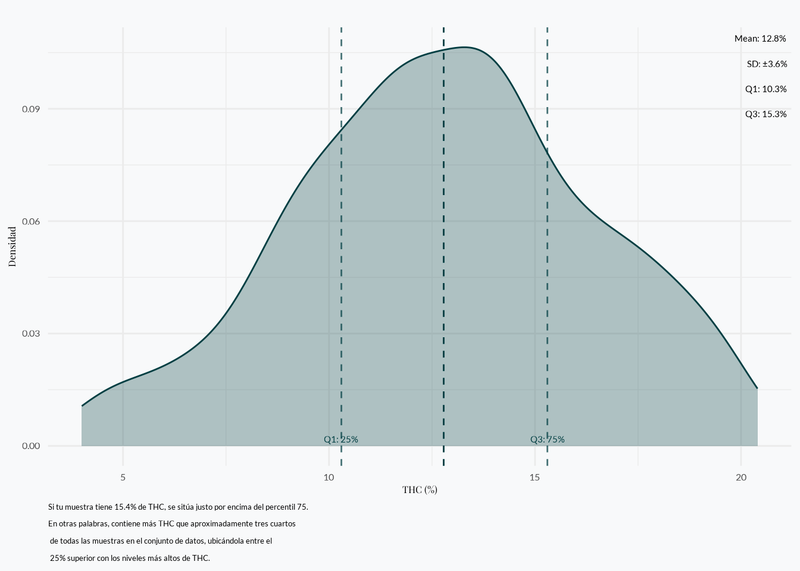

Análisis de THC y CBD
Recolección de datos de Flower Power
Introducción
Exploramos datos de 533 muestras de cannabis recolectadas entre septiembre de 2020 y octubre de 2024. Estas muestras fueron recolectadas en 15 ubicaciones diferentes a lo largo del país, incluyendo Antioquia, Bogotá, Santander, Valle del Cauca, Cauca, Bolívar, Cundinamarca, Caldas, Antioquia, Norte de Santander, Magdalena y Huila. Examinamos cómo se ven sus distribuciones y cómo se relacionan los dos compuestos entre sí.
Tiempo de recolección de datos
Nuestros datos fueron recolectados entre septiembre de 2020 y octubre de 2024.
THC por tiempo de recolección de datos
Cuando observamos los niveles de THC a lo largo del tiempo, notamos que las muestras recolectadas en el año más reciente tienden a tener concentraciones más altas de THC.

Esta tendencia puede interpretarse como un aumento en los niveles de THC a lo largo del tiempo, pero es importante considerar posibles sesgos de muestreo.1
Ubicaciones de las Muestras
Nuestras muestras fueron recolectadas en 15 ubicaciones diferentes a lo largo de Colombia, representando diversas regiones geográficas desde áreas costeras hasta territorios del interior. El mapa interactivo a continuación te permite explorar las ubicaciones de muestreo - puedes hacer zoom, desplazarte y hacer clic en los marcadores para ver detalles de la ubicación.
La distribución geográfica abarca desde la costa del Caribe (Santa Marta, Cartagena) hasta las regiones del interior (Bogotá, Medellín) y territorios del sur (Pitalito), representando muestras de diversas condiciones de crecimiento y prácticas de cultivo a lo largo de Colombia.
CBD por tiempo de recolección de datos
Los niveles de CBD muestran un patrón similar con pequeñas disminuciones a lo largo del tiempo.

Distribución de THC y CBD
Se encontró que el contenido promedio de THC fue del 12.8%, con la mitad central de las muestras variando entre 10.3% y 15.3%. En contraste, los niveles de CBD fueron mucho más bajos, promediando solo 0.9%, con la mayoría de las muestras cayendo entre 0.2% y 1.1%.
| Characteristic | N = 5331 |
|---|---|
| THC | 12.8% (10.3% - 15.3%) min 4.0 max 20.4 |
| CBD | 0.9% (0.2% - 1.1%) min 0.2 max 9.3 |
| 1 Mean% (Q1% - Q3%) min Min max Max | |
El siguiente gráfico muestra la distribución de los niveles de THC y CBD.

Distribución de CBD
Los datos de CBD están altamente sesgados hacia la derecha. Esto significa que la mayoría de las muestras tienen niveles muy bajos de CBD, con un pico agudo cerca de cero y una cola larga que se extiende hacia valores más altos. En términos simples, casi todas las muestras tienen poco CBD, y solo unas pocas muestran cantidades más altas.
Distribución de THC
En contraste, los niveles de THC forman una curva más en forma de campana (o distribuida normalmente). La mayoría de las muestras se agrupan alrededor del rango medio (alrededor del 12.8%), con menos muestras teniendo niveles extremadamente bajos o altos. Esto indica que las concentraciones de THC son más consistentes entre las muestras comparado con el CBD.
Curva de THC para comparación
El siguiente gráfico visualiza la distribución de concentraciones de THC en muestras de cannabis. La curva muestra con qué frecuencia ocurren diferentes porcentajes de THC en nuestro conjunto de datos. Hemos marcado puntos clave en la curva:
- Las líneas verticales punteadas indican el percentil 25 (Q1), la media y el percentil 75 (Q3)
- Q1 (percentil 25): 25% de las muestras tienen niveles de THC por debajo de este valor
- Media: La concentración promedio de THC en todas las muestras
- Q3 (percentil 75): 75% de las muestras tienen niveles de THC por debajo de este valor
Esta visualización te ayuda a entender dónde cae un porcentaje específico de THC dentro de la distribución general de potencia de cannabis en nuestro conjunto de datos.

#| '!! shinylive warning !!': |
#| shinylive does not work in self-contained HTML documents.
#| Please set `embed-resources: false` in your metadata.
#| standalone: true
#| components: [viewer]
#| layout: vertical
#| viewerHeight: 700
library(shiny)
library(ggplot2)
# Calculate statistics from the data
MEAN_THC <- 12.8
SD_THC <- 3.2
Q1_THC <- 10.3
Q3_THC <- 15.3
ui <- fluidPage(
titlePanel("Compara tu Nivel de THC"),
sidebarLayout(
sidebarPanel(
numericInput("thc_value",
"Ingresa el % de THC de tu muestra:",
value = MEAN_THC, # Set default to mean
min = 4,
max = 30,
step = 0.1
),
textOutput("percentile_text")
),
mainPanel(
plotOutput("thc_plot", height = "400px")
)
)
)
server <- function(input, output) {
# Generate distribution data
x <- seq(4, 25, length.out = 1000)
density_data <- data.frame(
x = x,
y = dnorm(x, mean = MEAN_THC, sd = SD_THC)
)
# Reactive value for validated THC input
valid_thc <- reactive({
if (is.null(input$thc_value) || is.na(input$thc_value)) {
return(MEAN_THC) # Return mean if input is null or NA
}
return(input$thc_value)
})
output$thc_plot <- renderPlot({
# Use validated THC value
thc_value <- valid_thc()
ggplot() +
# Plot density curve
geom_line(
data = density_data, aes(x = x, y = y),
color = "#003E42ff", size = 1
) +
geom_area(
data = density_data, aes(x = x, y = y),
fill = "#003E42ff", alpha = 0.3
) +
# Add reference lines
geom_vline(
xintercept = Q1_THC,
linetype = "dashed", color = "#003E42ff", alpha = 0.7
) +
geom_vline(
xintercept = Q3_THC,
linetype = "dashed", color = "#003E42ff", alpha = 0.7
) +
geom_vline(
xintercept = MEAN_THC,
linetype = "dashed", color = "#003E42ff"
) +
# Add user's THC value (only if valid)
geom_vline(
xintercept = thc_value,
color = "#EEC99Bff", size = 1.5
) +
# Add labels
annotate("text",
x = c(Q1_THC, Q3_THC),
y = c(0, 0),
label = c("Q1: 25%", "Q3: 75%"),
vjust = -0.5,
color = "#003E42ff"
) +
# Customize theme
theme_minimal() +
labs(
title = "Distribución de THC con tu Muestra",
x = "THC (%)",
y = "Densidad"
) +
theme(
text = element_text(family = "sans-serif"),
plot.title = element_text(face = "bold"),
panel.background = element_rect(fill = "#f8f9fa", color = NA),
plot.background = element_rect(fill = "#f8f9fa", color = NA)
)
})
output$percentile_text <- renderText({
# Use validated THC value
value <- valid_thc()
if (is.null(value) || is.na(value)) {
return("Por favor ingresa un valor válido de THC")
}
if (value < Q1_THC) {
sprintf(
"El nivel de THC de tu muestra (%.1f%%) está por debajo del percentil 25 (Q1: %.1f%%)",
value, Q1_THC
)
} else if (value > Q3_THC) {
sprintf(
"El nivel de THC de tu muestra (%.1f%%) está por encima del percentil 75 (Q3: %.1f%%)",
value, Q3_THC
)
} else {
sprintf(
"El nivel de THC de tu muestra (%.1f%%) está entre los percentiles 25 y 75 (Q1: %.1f%%, Q3: %.1f%%)",
value, Q1_THC, Q3_THC
)
}
})
}
shinyApp(ui, server)Esta visualización interactiva:
- Muestra la curva de distribución de THC
- Muestra líneas de referencia para Q1 (percentil 25), mediana y Q3 (percentil 75)
- Te permite ingresar el porcentaje de THC de tu muestra
- Muestra tu valor como una línea vertical color ámbar en el gráfico
- Proporciona retroalimentación de texto sobre dónde cae tu muestra en la distribución
Relación THC/CBD
Nuestro análisis muestra que el THC y el CBD tienen una relación inversa - cuando uno sube, el otro tiende a bajar. Este patrón es más claro en muestras con menos del 10% de THC. En muestras con mayor contenido de THC (por encima del 10%), esta relación inversa aún existe pero se vuelve más débil.

Cuando observamos la correlación entre THC y CBD usando las muestras con más del 10% de THC, vemos que la correlación negativa es -0.19 lo cual indica una relación negativa entre los dos compuestos pero no es muy fuerte.2
Resumen de Hallazgos
Nuestro análisis de 533 muestras de cannabis recolectadas entre 2020 y 2024 revela varias percepciones clave:
Contenido de THC
- THC Promedio: 12.8%, con la mitad central de las muestras variando entre 10.3% y 15.3%
- Los niveles de THC siguen una distribución relativamente normal, indicando consistencia entre las muestras
- Hay una tendencia ascendente notable en el contenido de THC en muestras más recientes
Contenido de CBD
- CBD Promedio: 0.9%, con la mayoría de las muestras conteniendo entre 0.2% y 1.1%
- La distribución de CBD está altamente sesgada hacia la derecha, con la mayoría de las muestras teniendo niveles muy bajos
- Los niveles de CBD muestran una ligera tendencia descendente durante el período de recolección
Relación Entre THC y CBD
- Existe una relación inversa entre los niveles de THC y CBD
- Esta correlación negativa es más fuerte cuando el THC está por debajo del 10%
- A medida que los niveles de THC aumentan más allá del 10%, la relación se vuelve menos pronunciada
Estos hallazgos destacan la predominancia del cannabis alto en THC y bajo en CBD en las muestras analizadas, con una tendencia hacia el aumento de la potencia de THC a lo largo del tiempo. Esta información puede ser valiosa para consumidores, productores y reguladores para entender el panorama actual del mercado de cannabis.
Footnotes
Si nuestras fuentes de datos se mantuvieron consistentes durante todo el período de recolección, podríamos atribuir esto a cambios reales en las prácticas de cultivo de cannabis. Sin embargo, es posible que nuestras muestras más recientes representen desproporcionadamente a productores con capacidades de cultivo avanzadas y mayores recursos, quienes pueden lograr concentraciones más altas de THC.↩︎
En el análisis de correlación, valores entre 0 y ±0.3 se consideran débiles, ±0.3 a ±0.7 moderados, y ±0.7 a ±1.0 fuertes. Nuestra correlación cae en el rango débil a moderado, sugiriendo que la relación no es fuerte.↩︎